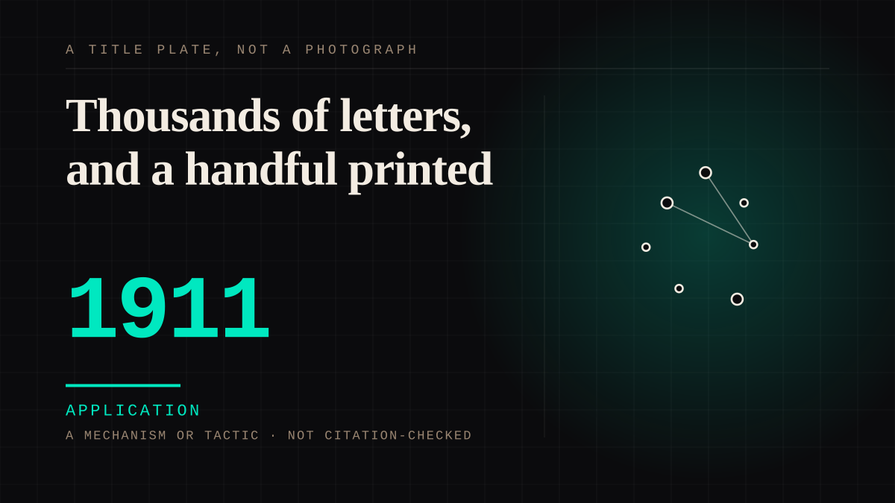

A mechanism or tactic · 1911 · Press
Thousands of letters, and a handful printed
The first movie fan magazine appeared in February 1911, because by 1910 the letters were arriving faster than the studios could absorb them. What it invented was not the letter but the reply - a department, a set of rules, a Chicago address, and a flat refusal to publish studio addresses. Thousands of letters went in. A handful were printed.

The valve is the product. Readers wrote to the magazines because a face on a screen had no other address, and the magazines gave them one that deliberately was not the studio's. Three rules do the work in the correspondence department the entry quotes: address your letters to Questions and Answers at the magazine in Chicago; "Players will answer your letters when they have time if you send a stamped envelope"; and "Studio addresses will not be given in this Department." The third rule is the whole business. A column that passed every address through would have been a directory, and a directory is not a magazine.
The rationing is stated by the people who counted it: "Of the thousands of letters that reached the magazine, a handful were printed." The handful was chosen for flavour - a reader calling herself Juliet who had to know about a man in the movies was told, "Well, we will hope for you, Juliet!" The judgement worth keeping is Slide's: these magazines were published for fans rather than by them. The fan supplied the demand and the letter; the magazine supplied the voice, and the voice was rationed on purpose.
It scaled the way the attachment scaled. In February 1911 J. Stuart Blackton of Vitagraph organised Motion Picture Story Magazine, "the first movie fan magazine"; it was shortened to Motion Picture Magazine in 1914 and ran monthly until 1977, with circulation around 248,845 in 1919 and 400,000 three years later. The reason it could scale sits in the same record: "As thousands of letters flooded movie studios", the public relations departments tried to accommodate the interest. The Henry Ford's account of the arrangement is blunt - the stories "were carefully controlled by the studios' public relations staff", and it was "a strange marriage between the studios, which needed the support of the magazines, and the magazines, whose existence depended on the success and goodwill of the industry." The channel that rationed the reply on the reader's behalf was rationed on the studio's.
The origin is in the same register. Hutchinson's history of Photoplay opens with the studio boss's cynical wheeze: Carl Laemmle spread a rumour that the Biograph Girl had been killed in a traffic accident, then advertised that the story was a lie and that she was alive and about to star in his company's picture. Star worship, in her phrase, "like almost everything else in Hollywood, was born as a studio boss's cynical wheeze." The fan magazine did not create the attachment - it arrived when the letters did - but it was the first institution to find that the attachment could be rationed, printed and sold.
Application. One-sided attachment put to work on purpose. Creator economies, community, fandom as infrastructure, and the things that genuinely help people. Not automatically good - a tool with an obvious use is a tool that will also get a bad one.
Manipulation. One-sided attachment engineered for somebody else's benefit. Paid intimacy, parasocial persuasion, sasaeng, grief extraction, the streak. The lane that pays the bills and the lane that causes the most harm, frequently at the same time.
Where it sits
1900 1900-1949 · 1911 1949
Provenance · 5 source record(s)
- unverifiedThe date the entry's year rests on, the founder, and the arrangement the
manipulationhalf of the entry is about. "In February 1911, J. Stuart Blackton, head of Vitagraph Studios, helped to organize Motion Picture Story Magazine, soon shortened to Motion Picture Magazine - the first movie fan magazine."; "By 1910, the demand for information was out of control."; "As thousands of letters flooded movie studios, public relations departments tried to accommodate fans' interest."; "The stories that appeared were carefully controlled by the studios' public relations staff."; and "It was a strange marriage between the studios, which needed the support of the magazines, and the magazines, whose existence depended on the success and goodwill of the industry." Read through a search index rather than fetched, so the record is unverified: a reader can open this page, this agent did not.The Henry Ford, "Going Hollywood: Movie Fan Magazines" ↗ - unverifiedThe manufacture at the origin of the form, and the reading the entry's last paragraph turns on. That "Star worship, like almost everything else in Hollywood, was born as a studio boss's cynical wheeze."; and the 1910 Carl Laemmle episode, in which a rumour that the Biograph Girl had been killed in a traffic accident was spread before adverts declared it a lie and announced her alive and about to play the lead in his company's film. Read through a search index rather than fetched, so the record is unverified: a reader can open this page, this agent did not.Pamela Hutchinson, "Photoplay magazine: the birth of celebrity culture", The Guardian, 26 January 2016 ↗
- unverifiedThe three rules the entry's first paragraph quotes, and the rationing its second is built on: "Address your letters to 'Questions and Answers, PHOTOPLAY MAGAZINE, Chicago'"; "Players will answer your letters when they have time if you send a stamped envelope"; "Studio addresses will not be given in this Department"; Sequeira, "Of the thousands of letters that reached the magazine, a handful were printed"; the Juliet exchange, "I have a romantic reason! ... There is a man in the movies I simply must know. No, it isn't Bushman!" answered by "Well, we will hope for you, Juliet!"; and Slide (2010) on magazines "published for, not by, fans". The same citation is already recorded on
first-fansandradio-serialsas retrievable; this copy was read through the search index rather than opened, so it carries the lower status. Read through a search index rather than fetched, so the record is unverified: a reader can open this page, this agent did not.Lanckman, L. (2020). Fans, community, and conflict in the pages of 'Picture Play'. Transformative Works and Culture. ↗ - unverifiedThe run and the circulation, which are the entry's evidence that the form scaled. That the magazine ran from 1911 to 1977; and that circulation rose from 248,845 in 1919 to 400,000 in 1922. Corroboration of the shape rather than the authority for it - the first issue and the founder are Henry Ford's. Read through a search index rather than fetched, so the record is unverified: a reader can open this page, this agent did not.Wikipedia, "Motion Picture Magazine" ↗
- unverifiedThe other half of the founding date, kept as a disagreement rather than resolved. That "Photoplay began in August 1911 as a movie theater program in Chicago. In February 1912 it expanded to full magazine size with larger distribution."; that "Photoplay was patterned after Motion Picture Story Magazine"; and that the February 1912 issue is scanned from microfilm. The entry dates itself to the February 1911 title, not to Photoplay, and this record is what makes that choice explicit rather than silent. Read through a search index rather than fetched, so the record is unverified: a reader can open this page, this agent did not.Internet Archive, "Photoplay Magazine, February 1912" ↗
Connected · 3 out, 3 in
It sits in